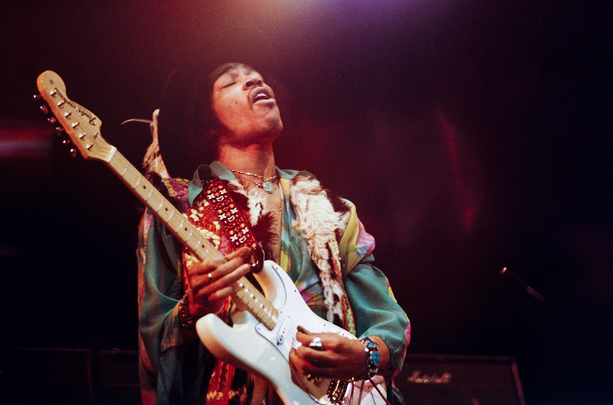

Jimi Hendrix
James Marshall "Jimi" Hendrix (born Johnny Allen Hendrix; November 27, 1942 – September 18, 1970) was an American guitarist, singer, and songwriter. Although his mainstream career spanned only four years, he is widely regarded as one of the most influential electric guitarists in the history.
More InfoMarcus Miller
William Henry Marcus Miller Jr. (born June 14, 1959) is an American musician, songwriter, and record producer. He is best known for his work as a bassist. He has worked with trumpeter Miles Davis, pianist Herbie Hancock, singer Luther Vandross, and saxophonist David Sanborn, among others.
More Info